P.I.M.P. My Camera in corso
Box camera d'epoca restaurate e riverniciate — tra cui una Zeiss Ikon Baby-Box Tengor originale, lente Goerz Frontar
Box camera d'epoca restaurate e riverniciate — tra cui una Zeiss Ikon Baby-Box Tengor originale, lente Goerz Frontar
La box camera è la macchina fotografica nella sua espressione più semplice: una scatola con una lente fissa, nata a inizio Novecento per rendere la fotografia di tutti. Il mio è un omaggio a un'invenzione che ormai abita ogni istante delle nostre vite: il restauro e il «pimpaggio» in colori pop rendono il vecchio di nuovo nuovo, ricordandoci le radici di un'invenzione che continua a incantare, illudere e ingannare il nostro immaginario.
The box camera is photography at its simplest: a box with a fixed lens, born in the early twentieth century to make photography everyone's. Mine is a homage to an invention that now inhabits every instant of our lives: restoring and "pimping" them in pop colours makes the old new again, reminding us of the roots of an invention that keeps enchanting, deluding and deceiving our imagination.
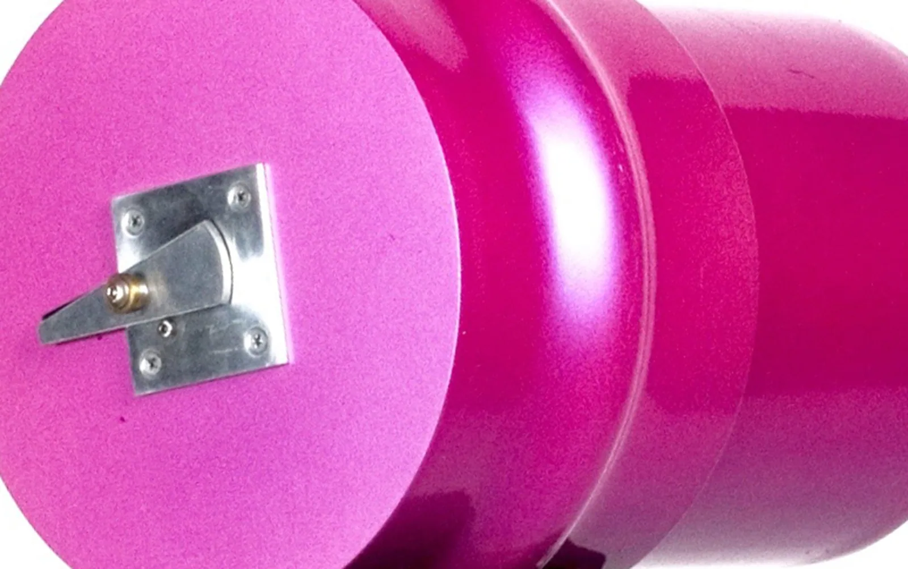
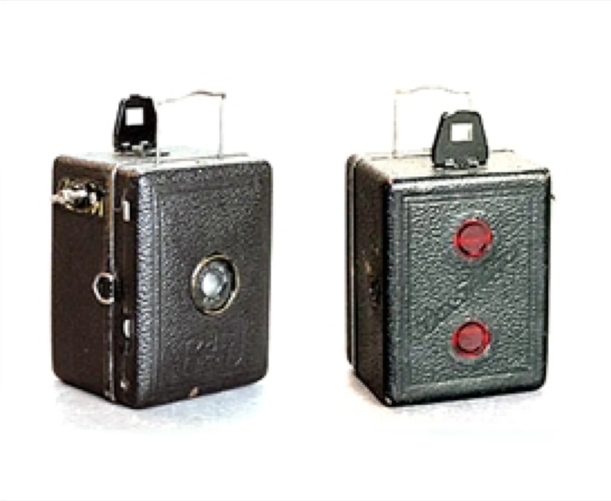
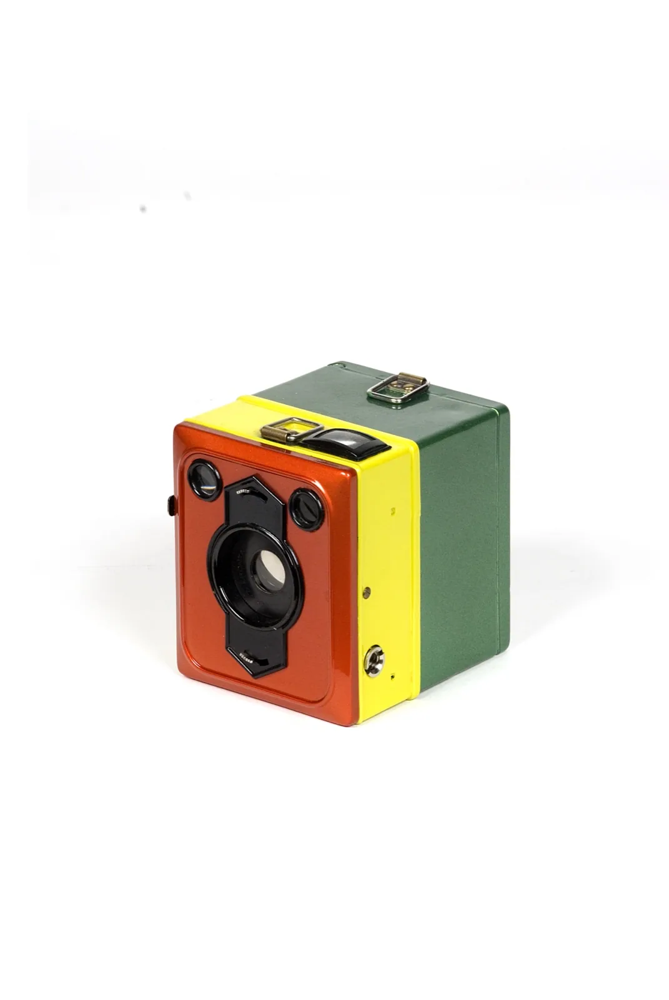
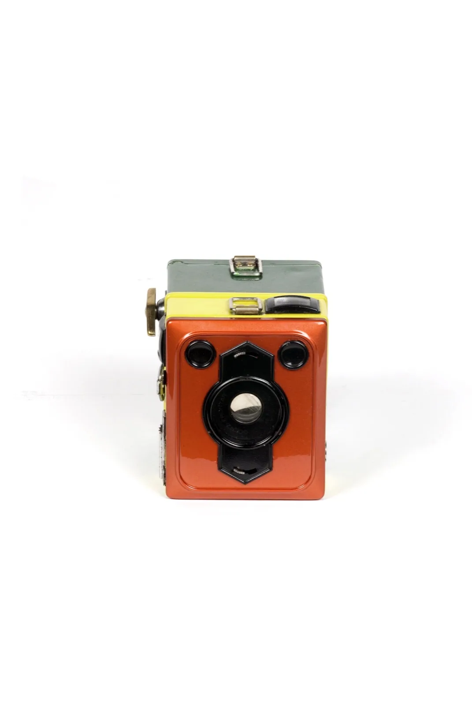
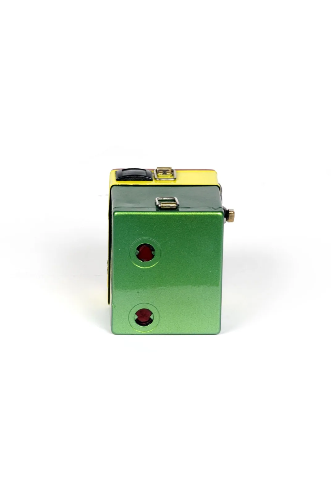
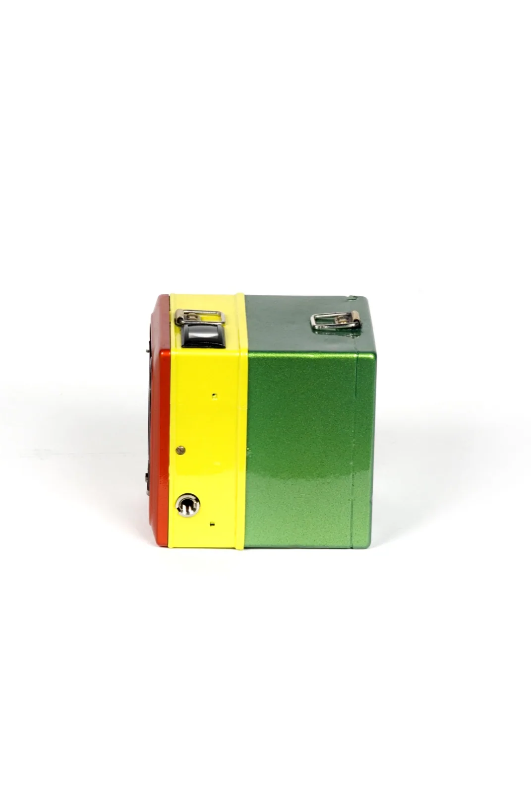
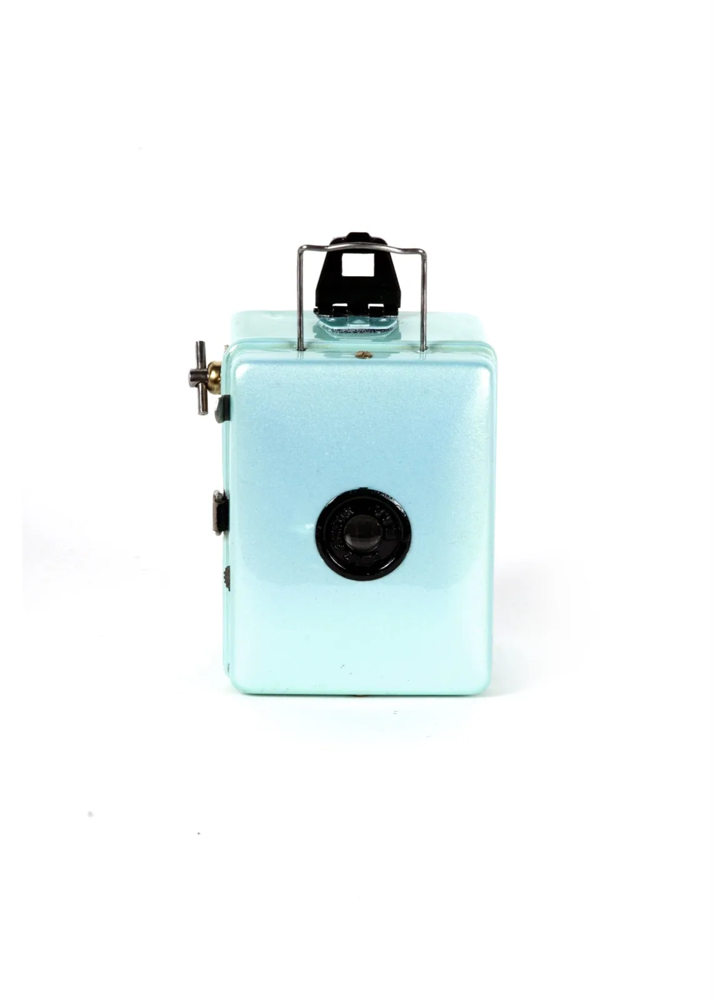
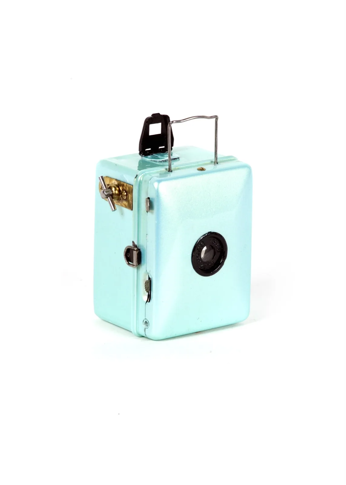
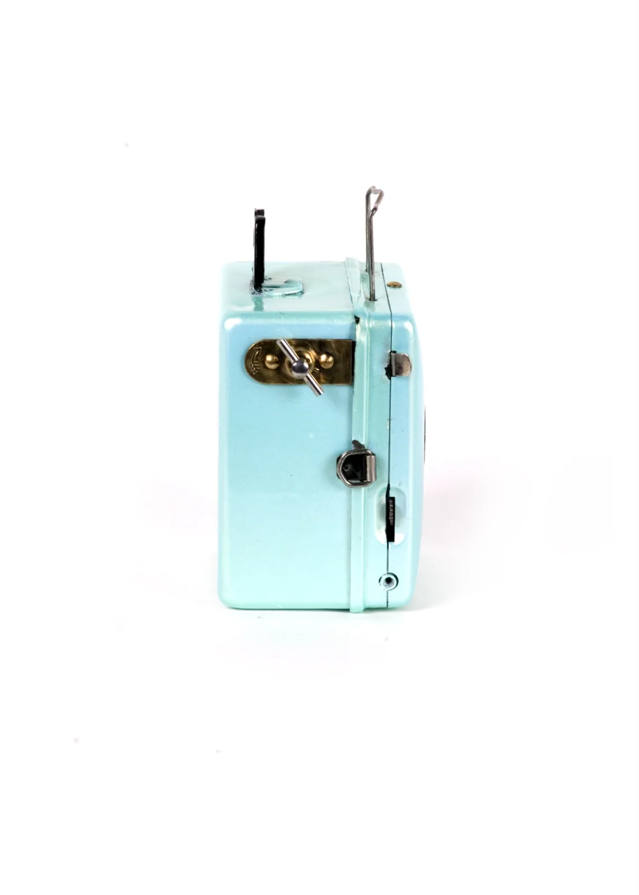
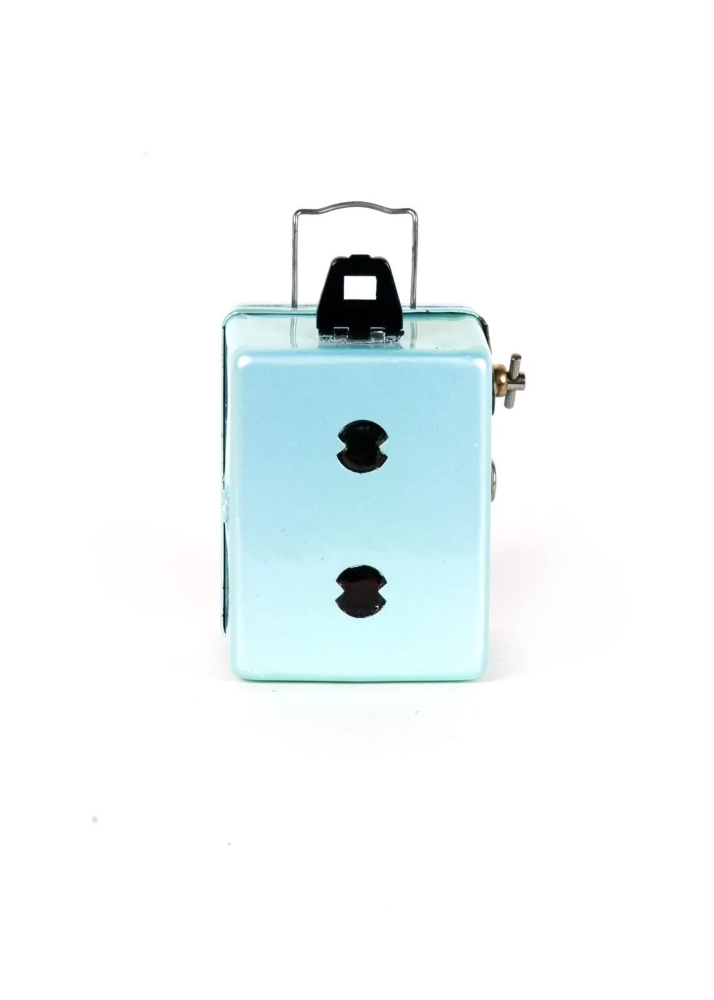
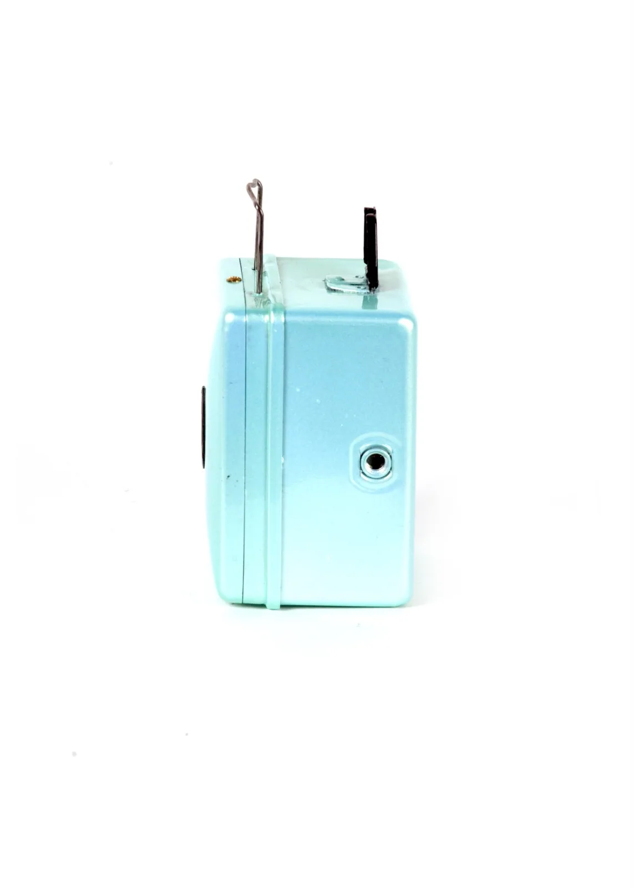